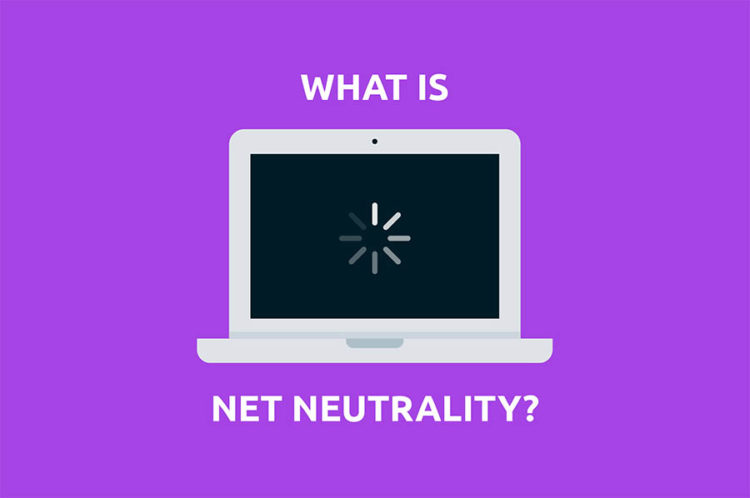

Viber blocked by Digicel and Lime
October 1, 2020 by Milton Francis
The two largest telecommunications company in Jamaica, Lime and Digicel,
in 2014, collectively blocked Voice Over IP (VOIP) application Viber from
using their network infrastructure to allow its customers to make calls
over the internet. Both Digicel and Lime ultimately blocked the VOIP
application and outlined similar sentiments as to why they saw it fit to
pull the plugs on Viber. The Chief Executive Officer of Digicel, in 2014,
Jay Saunders said “unlicensed Voice Over IP operators like Viber use
telecoms networks to deliver their services, but do not pay the requisite
money for the privilege. Digicel believes that this unauthorized use of
its network amounts to illegal bypass activity.” Lime’s Chief Executive
Officer James Pitt, in 2014, outlined similar reasons, "In order to
maintain network quality for our customers, Lime confirms it has been
reviewing unauthorized access to its networks. As part of the review,
Lime will no longer carry Viber and Tango voice calling on our networks."
This is clearly a case of net neutrality and it is of great importance
to the future of the internet that telecommunications companies in Jamaica
are made via legislations to allow any legitimate applications that their
customers would like to use access to their network.
Net Neutrality
November 4, 2018 by Odean Barnes

Net Neutrality is the principle that Internet Service Providers (ISPs)
must treat all Internet traffic as the same regardless of its kind,
source, or destination. What Digicel and LIME did was clearly violating
this principle as they lobbied for external companies to pay for the
“privilege” of accessing their networks. Net Neutrality states that ISPs
should only be tasked with delivering the traffic to consumers without
filtering, screening or blocking what goes through the network.
This issue sets a dangerous precedent if Telecoms companies are continued
to be allowed free reign to do as they please without much regulation
governing their activities. New regulations should be introduced and
amendments made to the Telecommunications Act to enforce Net Neutrality.
We propose that the OUR amends the core principles of Net Neutrality into
the Telecommunications Act and uphold these new regulations against all
Telecoms companies in Jamaica.
Net Neutrality allows a free, open, competitive market which boosts
innovation. Companies will not need to pay for preferential treatment or
access to an ISP’s customers and will have guaranteed access and speeds
regardless of what ISP a consumer uses. Many economists also agree that
Net Neutrality prevents larger companies from forcing out smaller start-ups
because the larger company pays for faster speeds and more preferential
treatment than the smaller start-up [6]. This stifles competition and
innovation which is bad for Jamaica’s future. Net Neutrality prevents this.